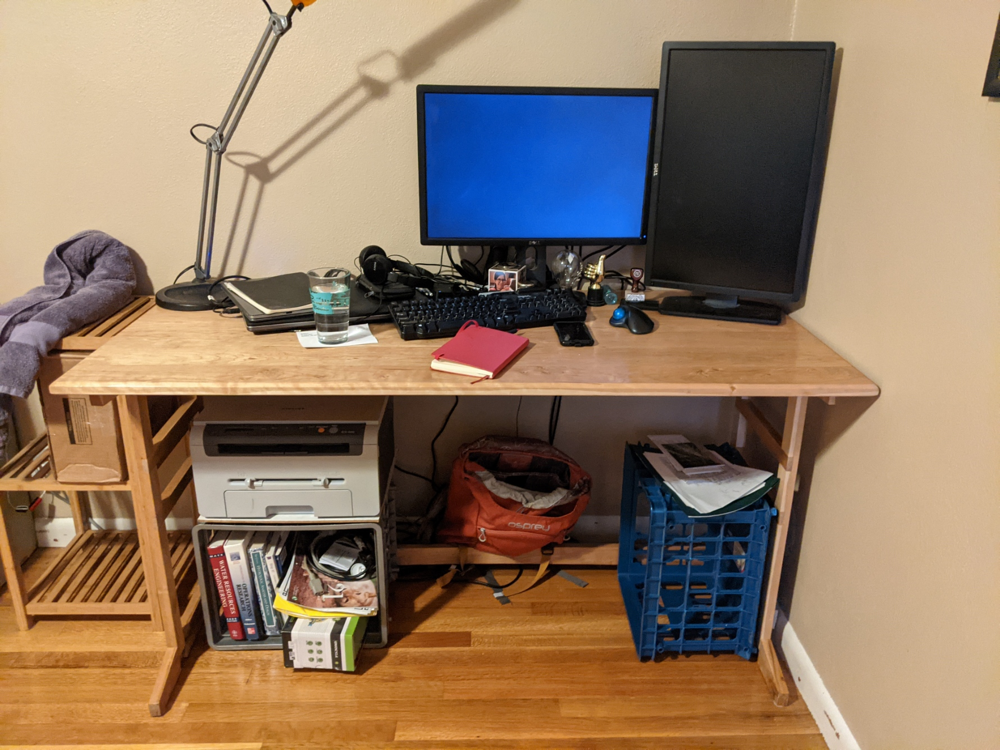
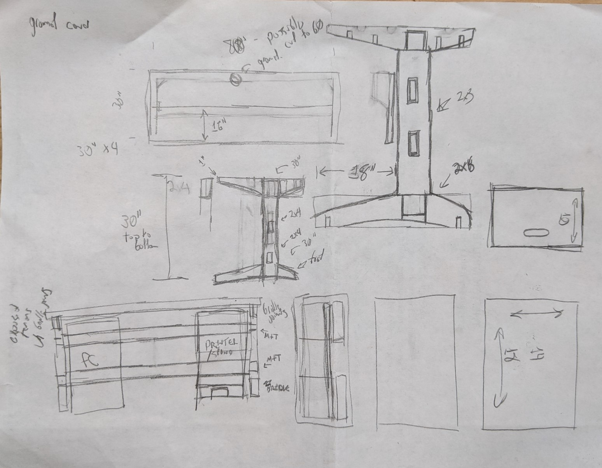
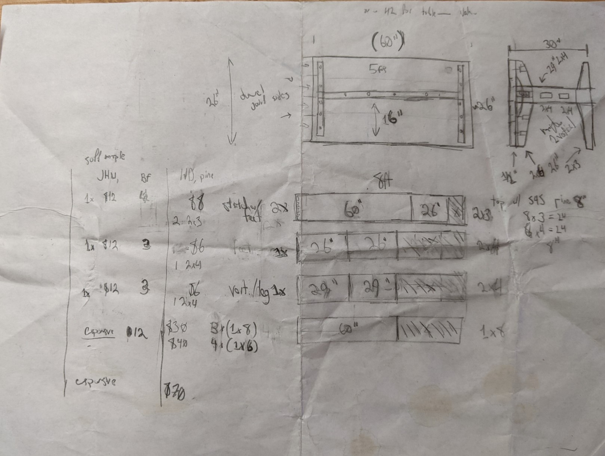

Desk
Concept
In late 2020, I realized I was going to need a better desk to continue working from home with, so I decided it was time to finally build one. This had been a goal of mine when getting into woodworking, but given the circumstances, I thought it was a good time to take a first shot at one. I ended up building something like a basic table, a little larger than most commercial desks, and gave it legs and supports at the far sides.
The desk-top is assembled from pieces of locally source cherry that I joined with a borrowed biscuit joiner and then planed flat. I put a slight half-inch bevel around the outside with a handplane.
Thoughts
The top came out great - I really took the time to learn to handplane it smooth and finish with shellac. It has a few blemishes from places where the grain switches direction and my handplaning messed it up, but not bad for my first try at a 'tabletop'.
There are a few things I'd like to improve about this desk in the future: - The legs ended up being extremely light weight and quickly thrown together, and while they serve their purpose, someday I want to replace them with something more study. It's also about two inches too high. The biggest reason the legs ended up the way they did was that I didn't buy enough wood to begin with. - It doesn't have any storage. As shown in the photo, I have some milk crates holding various things and a printer under it. Someday I might build a portable cabinet that fits under it and holds these kind of things. - I'd like to add a tray or shelf near the back to help with cable organization and to hold up my laptop and monitor at the same level. Maybe for cable organization to add a tray under the desk surface and use desk grommets to provide access for cables.
The plans I had sketched out show some of these additional features and how I'd really like to do the legs - I'm including them below (without commentary) as a friend had asked about my design process.
 Desk with office equipment and other stuff on it, pardon the mess!
Plans
 Overall design and leg detail, along with a side sketch of a knitting box I still need to make.
 A brief cut list and bill of materials to inform my shopping.